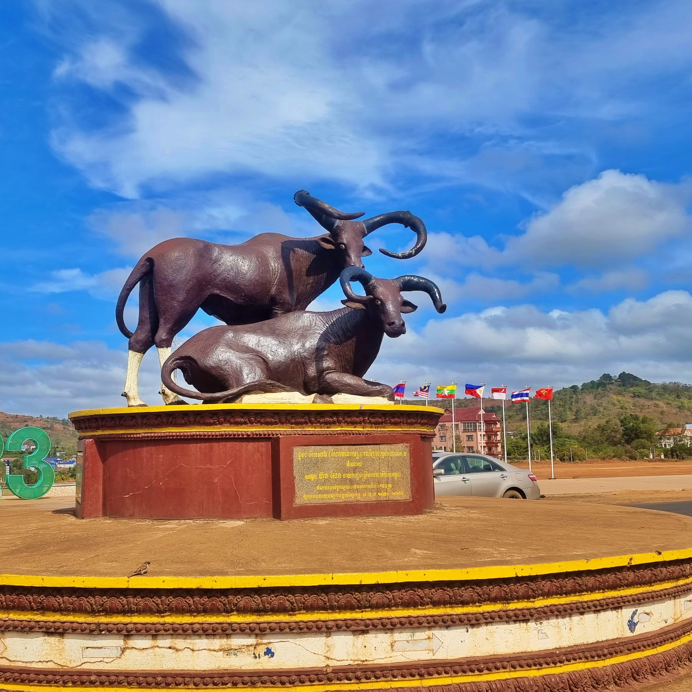

អំពីខេត្តមណ្ឌលគិរី
ខេត្តមណ្ឌលគិរី ស្ថិតនៅភាគឦសាននៃប្រទេសកម្ពុជា និងជាតំបន់ដែលមានភ្នំ ព្រៃឈើ និងធម្មជាតិដ៏ស្រស់ស្អាត។ ខេត្តនេះល្បីល្បាញដោយអាកាសធាតុត្រជាក់ និងទេសភាពភ្នំខៀវខ្ចី។
ប្រវត្តិសង្ខេប
ខេត្តមណ្ឌលគិរីត្រូវបានបង្កើតឡើងនៅឆ្នាំ១៩៦១ និងធ្លាប់ជាតំបន់សំបូរទៅដោយជនជាតិដើមភាគតិច។ បច្ចុប្បន្ន ខេត្តនេះកំពុងអភិវឌ្ឍលើវិស័យទេសចរណ៍ធម្មជាតិ និងការអភិរក្សព្រៃឈើ។
កន្លែងទេសចរណ៍សំខាន់ៗ
- ទឹកធ្លាក់ប៊ូស្រា
- ភ្នំដោះក្រមុំ
- សហគមន៍ជនជាតិព្នង
- ឧទ្យានជាតិមណ្ឌលគិរី
- ព្រៃធម្មជាតិ និងសត្វព្រៃ
ទីតាំងភូមិសាស្ត្រ
ខេត្តមណ្ឌលគិរីស្ថិតនៅភាគឦសាននៃកម្ពុជា មានព្រំប្រទល់ជាប់ខេត្តក្រចេះ និងរតនគិរី ព្រមទាំងជាប់ប្រទេសវៀតណាម។ តំបន់នេះសម្បូរទៅដោយព្រៃឈើ និងភ្នំខ្ពស់ៗ ដែលធ្វើឱ្យវាក្លាយជាតំបន់ទេសចរណ៍ធម្មជាតិដ៏ល្បី។